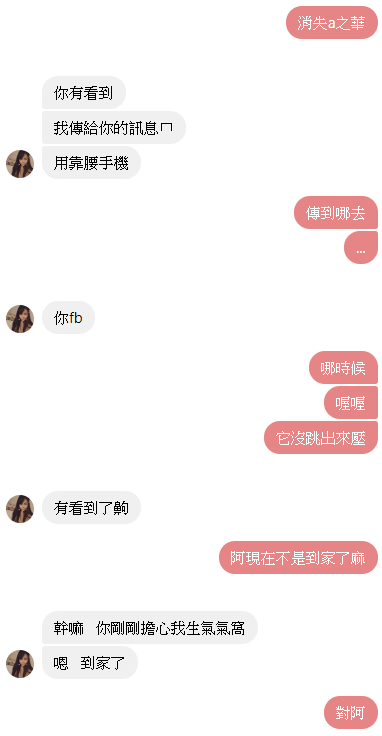
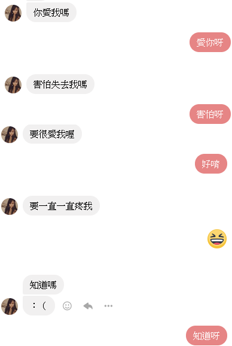

最好的情書，其實就是我們的對話紀錄
按鍵盤 "↓" ...
軒軒負責考，大人吃到飽

大人手機被停，軒軒以為大人生氣不理喵
失職的蝦大人，應該要把我拍的喵模喵樣
喵喵輸的很傷心，大人溫柔的關心
之華想被我吃唷
大對決，到底誰才是最軟的呢
麻糬吞下去就沒了，真有道理呢
蝦大人拿著蛋糕把喵喵拐走了
壞壞的蝦大人
腿軟的蝦大人，準備進入戰鬥!
兩位高智商，但是貓貓略勝一籌
福利大放送的蝦大人
好多好多好多好多年
努力認真的大人
帥帥的軒軒
生氣了，貓貓豎起耳朵的道歉
求大人陪喵喵講話
愛生氣的蝦大人

好愛好愛
飲料交換冰淇淋
詭異的麻糬
沒關西算我的
擔心大人生氣鼻子塞住
想哭的病人
原來我也會嘴甜
不能沒有蝦大人
眼力真好
色色的
像寵物一樣給觀賞的喵
經過一番哄騙賣萌後，大人開心了
沒有大人可愛
蝦比比想講話
謝謝大人的支持
一直一直很想
蝦大人發現了軒軒喵
午睡也想跟
不開心就想要飯飯
上課不認真
真心的
心裡想什麼，就會寫出什麼
蝦大人對貓喵很壞
因為喵喵，大人才認識格倫
原來撿愛心傘的習俗是從這裡開始
蝦大人小學生
互相道歉的兩人
擔心蝦大人
聽話的貓

甜蜜蜜黏踢踢
蝦大人是新娘